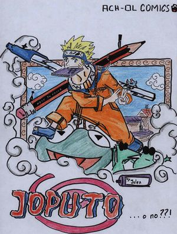
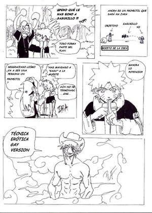

Joputo
 De: La Frikipedia, la enciclopedia extremadamente seria.
De: La Frikipedia, la enciclopedia extremadamente seria.
Joputo: evangelio apocrífico encontrado en la catacumba de san Pedro (Si venga, y qué más xD), creado en 2005 por "Julen Arké" miembro de ¨Joputo prodActions¨ . Es una frikada/parodia del manga dibujado por Masashi Kishimoto , Naruto , los que también son creadores de: "Openings y endings de Joputo", "two freaks", "bleach el doblaje" y próximamente "Freak note" (podéis encontrarlos en youtube)
Relata las aventuras de Ermaki Joputo, junto a las intervenciones del staf en escena, que marcan un punto muy original dentro del mundo de las paródias, visto también en dragon Fall.
¿De que trata?
En la villa oculta Koñohoja apareció una zorra demonio de nueve colas, a 15€ cada cola. Este demonio causó una inflación en la economía y demás enfermedades venerías. Para luchar contra la zorra la gente recurrió a los "shinpan". Uno de los shinpan encerró a la zorra en un sello pero él perdió su vida en el combate (que gran putada ¿verdad?) y ese shinpan fue proclamado el cuarto sin-hokage (a buena hora)
Ermaki Joputo el más gamberro de Koñohoja sueña con ser el sinhokage porque no le gusta que lo llamen Joputo Sin embargo no será fácil, no por los obstáculos que surgirán a partir de ahora ni por los enemigos a los que se han de enfrentar, si no porque le toca en el mismo grupo que Sasukillo el gay vengador que se ha enamorado de él y que lo desea a toda costa.
Personajes (los aparecidos hasta ahora)
 Portada del primer capitulo
 Los milenarios jutsus utilizados en Joputo
- Ermaki Joputo: es el prota de la historia (no, ¿en serio?). Le gusta jugar a la PS2 ir de parranda con Chiruka porque siempre paga él y hacer gamberradas todo el día y además esta dejando de fumar (¿?). Quiere convertirse en Sinhokage para que se acabe el cómic.Parodia de Naruto Uzumaki
- Sasukillo Utchija: es el clásico emo vengador (excepto que no es tan emo y el si acepta ser joto (gay).
- Garrula Moruno (alias puti-chan) (no, es en serio XD)...Toda la clase la llama ¨ La puta ¨ el mote le queda como anillo al dedo siendo una chica tan cortita, intelectualmente hablando, saca buenas notas, y bueno la envidia hizo el resto. Es extremadamente feminista y algo violenta. Le gusta Sasukillo a pesar de saber que es joto. Parodia de Sakura Haruno
- Jamematen Kashikeshi: es el maestro de los tres raros anteriores. Su hobbie es el rol y el manga o sea que es otaku aunque para sus alumnos es friki(que no es lo mismo). No le gusta destaparse el ojo porque es malo para la vista, por eso solo puede usar el porringan con un ojo. Su mejor técnica es el Pedorry, una técina que utiliza después de comer una lata de fabada y echarse un pedo en la lata y atacar. Parodia de Kakashi Hatake
- Chiruka: es el maestro de Joputo que siempre lo invita de parranda, para comer lo que le encanta, porque no tiene que pagar nada. Sin embargo, es un ninja odiado y marginado por toda la villa. Parodia de Iruka Umino
- Pájaro ninja: uno de los más grandes ninjas que ha existido en Koñohoja, fue entrenado por un ninja veterinario del cual aprendió todas las técnicas ninjas mientras este entrenba, sin embargo, un día desapareció de casa de su dueño. Antes de eso le perteneció a un ninja malvado (no hace falta decir que es la parodia de Orochimaru solo que aun no le ponen nombre) sin embargo le borró la memoria y no sabe nada de él. Fue asesinado por Chiruka (cuando este le cae encima cuando cae de un árbol) ... o eso se cree. Personaje propio
- Mamoncete Zara: un asesino que usa ropa de limpieza y una fregona como arma. Heredó el nombre de su madre la cual dedicó su vida a la limpieza. Compró a Fuckyou en e-bay en la sección de armas y le ha cogido cariño (cariño de hermano mayor no de otro)Parodia de Momichi Zabuza
- Fuckyou: es el travelo compañero de Zara aunque bateaba del otro lado y le gustaba Zara. Fue comprado por Zara en e-bay en la sección de armas y le fue cogiendo cariño (cariño gay, solo él). Más de una vez se le ha visto liado con Zara. Siempre lleva una máscara de Scream y lanza brochetas de carne. Parodia de Haku
- Coshino: es un tipo raro, siempre va con un cacho abrigo, además que hecha un tufo que tira ¨ pa tras ¨. Parodia de Shino Aburame
- Jitana: esta si que da miedo, pertenece a la familia más temida de Koñoja. Esta loca, es agresiva, le gusta robarle a la gente en la calle e igual que Sasukillo anda detrás de Joputo. Parodia de Hinata Hyuuga (aunque no lo parezca)
- Kebab: está ciego (o eso se cree) el perro lazarillo que lleva en la cabeza parece que esta muerto ya que nunca se ha movido.Parodia de Kiba Inuzuka
- Chicomarbú: heredero de de la mayor empresa de galletas, este tió siempre anda en la parra de Parodia Shikamaru Nara
- Eno: esta, es la hija del fundador de ¨ la sal de frutas ¨ . Se ve que rivaliza con la puta por Sasukillo. Ella ignoraba que Sasukillo es Ino Yamanaka
- Chufi: no se sabe mucho de él, solo que sufre de anorexia además de tener unas bragas en la cabeza (ha de ser algo de Happosai) Parodia de Chochi Akimichi
- Broko Lee: tipo friki imitador de Bruce Lee, su cara es idéntica a la de Rock Lee, sin embargo, frente a la gente utiliza el metrosexual no jutsu Parodia de Rock Lee
- Karakulo: un tipo que busca lio en cualquier lado si algo le molesta Parodia de Kankuro
- Graava del camino: un filpao. Indirectamente fue el causante de la muerte del Pajaro Ninja Parodia de Gaara.
- Temeraria una nimfómana a más no poder; es la tercera por Sasukillo, aunque en los examenes de grado Medio Tunning se chorrea por tanto tipo Parodia de Temari
- Negi: primo de Jitana. Al igual que ella es temido en toda la villa. parodia de Neji.
- Tente: se sabe poco de ella parodia de Tenten.
- Alko Holika igual que tente, solo se sabe su nombre y que se va de farra cada que puede, encima que será quien aplique la segunda fase del examen del grado medio tunning. Parodia de Anko Mitarashi.
Los demás se irán incluyendo cuando tengan más protagonismo...
Lista de cápitulos
Tomo 1
- 1. Ermaki Joputo
- 2. Konlamano
- 3. ¡Yo soy Sasukillo!
- 4. Kashikeshi
- 5. ¿Un despiste? va ser del riego
- 6. Sasukillo es de esos
- 7. La conclusión de Kashikeshi
Tomo 2
- 8. Sus digo que estais...
- 9. ¡Al fin una misión!
- 10. 1+1=7 menos, ¿no?
- 11. El país de la buena onda
- 12. ¿Pero no llegabamos ya? Otra piedra en el camino del ninja
- 13. Round 1: Fight!
- 14. ¡Ni porringan ni leches, a hostia limpia!
- 15. Plan Joputesco
Tomo 3
- 16. Media parte
- 17. Segunda parte
- 18. Especial pájaro ninja (parte de la historia real sin nombre)
- 19. ¿Qué hace un ninja como tú, en una aldea como esta?
- 20. Examen
- 21. Examen teórico
Tomo 4 (hasta ahora)
- 22. Fin del examen teórico
Véase también
Enlace externo
Página web de Joputo
Autor(es):
- Khazike Khashondo
- Diegocon13
- Naruto hyuga
- El Samo 2
- Lljosemll
- Isay e
- Shakasulu
Frikipedia 2005-2016, Licencia
GFDL 1.2 - Extraído por FrikiLeaks